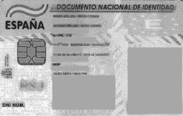

Plans de manteniment i administració de la seguretat
La Constitució vol protegir d’una manera molt curosa una sèrie de drets inherents a tota persona (els anomenats drets fonamentals). Entre aquests destaca, entre d’altres, el dret a la intimitat. A més de les conseqüències penals que pot comportar la vulneració d’aquest dret, hi ha altres lleis, independentment del marc penal, que també protegeixen la privacitat de la persona en tots els seus aspectes, també pel que fa a les seves pròpies dades.
Marc extrapenal
En dret s’entén per marc extrapenal el sector o la branca de l’ordenament jurídic que no és penal, és a dir, que conté sancions menys greus que el dret penal (per exemple, dret administratiu, dret civil, dret laboral, etc.).
A causa d’aquest fet, la legislació és molt proteccionista amb les dades. Això afecta d’una manera negativa els sistemes informàtics, la manera com operen les organitzacions, i fins i tot el dia a dia de les persones. El conjunt de normes intenta trobar un equilibri entre aquests elements, aparentment oposats, per aconseguir un nivell de seguretat de les dades adequat, juntament amb una protecció suficient de la intimitat, i garantir a les empreses el poder operar amb la informació d’una manera eficient.
Legislació sobre protecció de dades
La protecció de les dades de caràcter personal ha pres darrerament una gran rellevància. Les persones es mostren cada dia més curoses amb les seves dades i són més conscients de la protecció de què ha de gaudir la seva informació personal.
La situació actual és producte, d’una banda, de la normativa en matèria de protecció de dades i, de l’altra, de l’activitat creixent de l’Agència Espanyola de Protecció de Dades, organisme autònom encarregat d’assegurar el compliment de la legislació vigent (i fruit de la mateixa legislació).
Per a més informació sobre l’Agència Espanyola de Protecció de Dades, consulteu la secció “Adreces d’interès” del web.
Agències autonòmiques
A data d’avui no totes les comunitats autònomes han creat les seves agències de protecció de dades. Catalunya sí que en té: és l’Agència Catalana de Protecció de Dades, consulteu la secció “Adreces d’interès” del web.
Veurem a continuació com han anat evolucionant les lleis; la primera en aparèixer va ser la Llei Orgànica 15/1999, de 13 de desembre, de protecció de dades de caràcter personal (LOPD). Aquesta norma tenia per objecte garantir i protegir, en relació amb el tractament de dades personals, les llibertats públiques i els drets fonamentals de les persones físiques, i en especial el seu honor, intimitat i privacitat. La LOPD va crear els anomenats drets ARCO:
- Dret d’Accés: Reconeix als ciutadans la potestat de defensar la seva privacitat controlant per si mateixos l’ús que es fa de les seves dades personals.
- Drets de Rectificació : La LOPD també regula els drets de rectificació i cancel·lació: quan les dades personals d’un ciutadà resulten ser incompletes, inexactes, excessives o inadequades aquest pot requerir al responsable del fitxer la seva rectificació o cancel·lació.
- Dret de Cancel·lació: El ciutadà pot exigir al responsable del fitxer la supressió de dades que consideri inadequades o excessives.
- Dret d’Oposició: Consisteix en el dret dels titulars de les dades per dirigir-se al responsable del fitxer perquè deixi de tractar les seves dades sense el seu consentiment per a fins de publicitat o prospecció comercial.
Posteriorment, amb el desenvolupament i popularització d’Internet i l’aparició de comerços online va aparèixer al 2002 la llei de serveis de la societat de la informació i comerç electrònic, coneguda per les seves sigles com LSSI.
Al 2003 apareix la llei de la firma electrònica per regular els certificats digitals i donar validesa jurídica a aquesta firma. Al 2003 també s’aprova el Reglament que desenvolupa la llei de protecció de dades de caràcter personal de 1999. El 2007 s’aprova la llei de conservació de dades a les comunicacions electròniques i a les xarxes públiques de comunicacions.
El 27 d’abril de 2016 s’aprova el el Reglament General de Protecció de dades (RGPD), que no va entrar en vigor fins al Maig del 2018, per donar un marc Europeu. Aquest reglament, entre altres coses, amplia els drets ARCO.
El 5 de desembre de 2018 s’aprova la llei orgànica 3/2018, Protecció de Dades Personals i Garanties dels Drets Digitals (LOPDGD), que adapta l’RGPD a la normativa espanyola. Amb LOPDGD i l’RGPD es deroga l’antiga LOPD.
A continuació teniu un llistat d’aquestes lleis :
- Llei Orgànica 15/1999, de 13 de desembre, de protecció de dades de caràcter personal (LOPD).
- Llei 34/2002, d’11 de juliol, de serveis de la societat de la informació i comerç electrònic (LSSICE) o, habitualment (LSSI).
- Llei 59/2003, de 19 de desembre, de firma electrònica.
- Llei Orgànica 15/2003, de 25 de novembre, per la qual es modifica la Llei Orgànica 10/1995, de 23 de novembre, del Codi Penal.
- Reial Decret 1720/2007, de 21 de desembre, pel que s’aprova el Reglament de desenvolupament de la Llei Orgànica 15/1999, de 13 de desembre, de protecció de dades de caràcter personal.
- Llei 25/2007, de 18 d’octubre, de conservació de dades relatives a las comunicacions electròniques i a les xarxes públiques de comunicacions.
- Llei Orgànica 5/2010, de 22 de juny, per la qual es modifica la Llei Orgànica. 10/1995, de 23 de novembre, del Codi Penal.
- Reglament General de Protecció de dades (RGPD) del 27 d’Abril de 2016.
- Llei orgànica 3/2018 Protecció de Dades Personals i Garanties dels Drets Digitals (LOPDGD) del 5 de desembre de 2018.
Per dur a terme una tasca professional de qualitat és molt important (fins i tot ens atreviríem a dir que imprescindible) conèixer la normativa espanyola aplicable a la protecció de dades de caràcter personal.
El Reglament General de Protecció de dades (RGPD)
Reviseu el subapartat “El Codi Penal i les conductes il·lícites vinculades a la informàtica”, d’aquesta mateixa unitat.
Aquest reglament és una norma d’àmbit europeu que protegeix les dades personals de tots els residents a la Unió Europea i garanteix el flux de dades entre els països de la Unió Europea. Per tant, els països necessiten integrar aquest reglament a les seves legislacions.
Aquest reglament estableix l’obligació de les organitzacions d’adoptar mesures destinades a garantir la protecció d’aquestes dades que afecten sistemes informàtics, fitxers, suports d’emmagatzematge, demanar el consentiment per usar les dades de caràcter personal i procediments operatius. Aquestes mesures han d’adoptar-les totes les organitzacions que operen amb residents a la Unió Europea, encara que no hi tinguin la seva seu.
En el Capítol 7 d’aquest reglament es crea el Comitè Europeu de protecció de dades per supervisar el Reglament i la seva aplicació als diferents països d’Europa. En el Capítol 11, Disposicions finals, s’estableix com a màxim el 25 de maig del 2020 per fer una primera avaluació i revisió del reglament per tal d’anar-lo actualitzant als nous temps. Posteriorment, aquesta revisió es repetirà cada 4 anys.
Els fitxers que han de satisfer mesures de seguretat no són tan sols aquells als quals es pot accedir a Internet, sinó tots els que continguin dades personals.
L’RGPD és aplicable a qualsevol informació sobre persones físiques identificades o identificables (nom i cognoms, edat, sexe, dades d’identificació fiscal, estat civil, professió, domicili, dades biomètriques…) enregistrada en qualsevol suport físic (inclòs el paper), que en permeti el tractament manual o automatitzat i ús posterior pel sector públic o privat. Traspassat a l’àmbit de les empreses, s’ha d’interpretar que l’RGPD és aplicable a qualsevol organització que manipuli o arxivi fitxers, tant en paper com en suport magnètic, que continguin informació o dades de caràcter personal, tant dels seus treballadors com dels seus clients o proveïdors (persones físiques), la qual cosa obliga les empreses, institucions, professionals i, en general, totes les persones jurídiques o físiques que operin amb fitxers de dades de caràcter personal, al compliment d’una sèrie d’obligacions legals. Cal tenir present, però, que al considerand 18, diu: “El reglament no s’aplica al tractament de dades de caràcter personal dut a terme per una persona física en el curs d’una activitat exclusivament personal o domèstica, és a dir sense cap connexió amb una activitat professional o comercial”.
Què és una dada de caràcter personal?
Segons el Reglament General de Protecció de dades (RGPD), una dada de caràcter personal és “qualsevol informació sobre una persona física identificada o identificable (l’interessat)”.
Per tractament s’entén “qualsevol operació o conjunt d’operacions realitzades sobre dades personals o conjunts de dades personals, ja sigui per procediments automatitzats o no, com la recollida, el registre, l’organització, l’estructuració, la conservació, l’adaptació o la modificació, l’extracció, la consulta, la utilització, la comunicació per transmissió, difusió o qualsevol altra forma d’habilitació d’accés, acarament o interconnexió, limitació, supressió o destrucció”.
Objectiu del reglament i principis bàsics de l'RGPD
El parlament Europeu i el Consell de la Unió Europea, a partir del Tractat de funcionament de la Unió Europea, en concret de l’article 16, i d’una proposta de la Comissió Europea, van enviar una proposta del text legislatiu als parlaments nacionals, per posteriorment elaborar dos dictàmens. L’RGPD considera que la protecció del tractament de les dades personals és un dret fonamental, tal i com està a la Carta dels Drets Fonamentals de la Unió Europea a l’article 8, que estableix que qualsevol persona té dret a la protecció de les dades de caràcter personal que l’afecten. Pel que fa al tractament de les dades personals s’han de respectar les llibertats i els drets fonamentals, especialment el dret a la protecció de les dades de caràcter personal, sigui quina sigui la seva nacionalitat o residència.
L’objectiu de l’RGPD és, doncs, garantir i protegir la privacitat i la intimitat de les persones físiques. Tal i com queda clar a l’article 1 del RGPD on s’explica l’objecte d’aquest, engloba tres objectes:
- Establir les normes relatives a la protecció de les persones físiques pel que fa al tractament de les dades personals i les normes relatives a la lliure circulació d’aquestes dades.
- Protegir els drets i les llibertats fonamentals de les persones físiques i el seu dret a la protecció de les dades personals.
- Evitar restriccions a la lliure circulació de les dades personals a la Unió Europea originades per les necessitats de protecció de dades.
L’RGPD canvia alguns articles de la LOPD i afegeix noves obligacions per a les empreses.
Els canvis més importants de l’RGPD respecte la LOPD són:
- El principi de responsabilitat proactiva. El nou Reglament indica que el responsable del tractament ha d’aplicar mesures apropiades per poder demostrar que el tractament és conforme al Reglament, tal i com aparèix a l’article 5. Les organitzacions han d’analitzar quines dades tracten i amb quines finalitats ho fan i han de mirar quins tipus d’operacions de tractament realitzen per tal d’aplicar les mesures que preveu l’RGPD. Aquestes mesures han de ser les adequades per complir amb el Reglament. També han de poder demostrar el compliment del Reglament davant de tercers. Aquest principi exigeix que el responsable del tractament ha de tenir una actitud proactiva, davant de tots els tractaments de dades que realitzi.
- El principi de l’enfocament de risc. El nou Reglament indica que s’ha de tenir en compte el risc per als drets i les llibertats de les persones. Així, algunes de les mesures només s’han d’aplicar quan hi hagi un alt risc per als drets i les llibertats. Les mesures previstes per l’RGPD s’han d’adaptar a les característiques de les organitzacions. El que pot ser bo per a una organització no necessàriament ho ha de ser per a una altra. No és el mateix una organització que utilitza dades de milions de persones, amb tractaments que contenen informació personal sensible o volums importants de dades sobre cada persona, que una petita empresa amb poques dades i que treballa amb dades no sensibles.
A més, manté (ampliats en alguns casos) els següents principis ja recollits a la LOPD:
- Principi de qualitat de les dades: les dades de caràcter personal només es poden recollir per al seu tractament i sotmetre’s a aquest tractament quan siguin adequades, pertinents i no excessives amb relació a l’àmbit i les finalitats determinades, explícites i legítimes per a les quals s’hagin obtingut. L’RGPD exigeix reduir al mínim necessari tant el tractament de les dades com les persones autoritzades a accedir a aquestes dades.
- Finalitat expressa: les dades de caràcter personal objecte de tractament no poden ser usades per a finalitats que no siguin compatibles amb aquelles per a les quals s’han recollit. Es consideren compatibles, tanmateix, el tractament posterior d’aquestes dades amb finalitats històriques, estadístiques o científiques.
- Necessitat de consentiment de la persona afectada: el tractament de les dades requereix el consentiment de la persona afectada.
- Actualitat de les dades: les dades personals que s’incorporin en un fitxer han de respondre a una situació actual.
- Principi d’exactitud: les dades personals han de ser susceptibles de modificació i de rectificació des del moment en què se’n coneix la modificació.
- Deure d’informació a la persona afectada: les persones interessades a les quals se sol·licitin dades de caràcter personal hauran de ser advertides prèviament de manera expressa, precisa i inequívoca:
- Que les seves dades seran incloses en un fitxer, de la finalitat de la recollida i dels destinataris de la informació.
- De l’obligatorietat o voluntarietat de donar aquestes dades.
- De les conseqüències que porten aparellades l’obtenció de les dades o de la negativa a subministrar-les.
- De la possibilitat d’exercir els drets d’accés, rectificació, cancel·lació i oposició (drets ARCO).
- De la identificació i de l’adreça de la persona encarregada de dur a terme el tractament del fitxer o, si escau, del seu representant, perquè els afectats puguin exercir els seus drets.
A l’RGPD alguns d’aquests drets s’han ampliat:
- El dret de cancel·lació ha passat a denominar-se dret de supressió i té un aspecte molt comentat però adreçat essencialment als navegadors d’internet i xarxes socials: el dret a l’oblit.
- El dret al consentiment: L’RGPD requereix que l’interessat presti el consentiment mitjançant una declaració inequívoca o una acció afirmativa clara. Als efectes del nou Reglament, les caselles ja marcades, el consentiment tàcit o la inacció no constitueixen un consentiment vàlid. Igualment, perquè les dades estiguin especialment protegides, és necessari donar el consentiment exprés i per escrit.
També s’han incorporat dos nous drets: limitació del tractament i portabilitat.
- El dret a la limitació del tractament amplia el dret del consentiment; és el dret de l’usuari a posar limitacions als tractaments sobre les seves dades.
- El dret a la portabilitat de les dades inclou, per una banda, que la informació com a resposta al dret d’accés s’ha de proporcionar de manera completa i en format compatible d’ús corrent i, per una altra, que ha de poder-se transmetre a petició de l’interessat en aquest format directament a una altra organització (per exemple, si canviem de proveïdor).
Cancel·lació i bloqueig de dades
És el procediment en virtut del qual el responsable cessa en l’ús de les dades. La cancel·lació implicarà el bloqueig de les dades, que consisteix a identificar-les i reservar-les per impedir-ne el tractament, excepte per posar-les a disposició de les administracions públiques, jutges i tribunals per atendre les possibles responsabilitats nascudes del tractament, i només durant el termini de prescripció de les responsabilitats esmentades. Transcorregut aquest termini, caldrà eliminar efectivament les dades.
És precís informar a les persones afectades per l’ús de les seves dades dels ítems que es llisten a continuació, per tal que puguin exercir pròpiament els drets anteriors:
- La base jurídica del tractament.
- Interessos legítims que es volen assolir.
- Necessitat de donar un consentiment. Aquest s’ha de donar amb un acte afirmatiu clar, específic, informat i inequívoc. Pot realitzar-se en paper o a través de mitjans electrònics.
- Termini de conservació de les dades. Quan aquest venci, el responsable del tractament n’ha de limitar el tractament a través de mitjans tècnics com impedir-hi l’acces als usuaris, trasllat temporal de les dades afectades a un altre sistema de tractament o retirada temporal d’un lloc d’Internet de les dades afectades.
- Dades de contacte amb el delegat de protecció de dades (si n’hi ha).
- Existència del dret a reclamar a una autoritat de control. Això és important, ja que també existeix, en cas de tractament inadequat o negligent, el dret a obtenir una reparació, i si escau una indemnització per part del perjudicat.
- Existència de decisions automatitzades o l’elaboració de perfils (si n’hi ha). L’interessat té dret a oposar-se a que les dades personals que l’afecten siguin objecte d’un tractament, inclosa l’elaboració de perfils. El responsable del tractament ha de deixar de tractar aquestes dades personals, tret que acrediti motius legítims imperiosos per al tractament que prevalguin sobre els interessos, els drets i les llibertats de l’interessat, o per a la formulació, l’exercici o la defensa de reclamacions. L’interessat també té dret a no ser objecte de decisions basades exclusivament en un tractament automatitzat.
- Dret a la informació de l’afectat davant canvis en les seves dades: Si hi ha un canvi de les dades s’ha d’informar del canvi a l’afectat, per tal de que les verifiqui i conegui el canvi.
- Si es transmetran les dades a tercers. Cal tenir present que només s’han de fer transferències de dades personals que es tracten o que es tractaran quan es transfereixin a un tercer país o a una organització internacional si, sens perjudici de la resta de disposicions del RGPD, el responsable i l’encarregat del tractament compleixen les condicions adecuades, incloses les relatives a les transferències posteriors de dades personals des del tercer país o organització internacional a un altre tercer país o una altra organització internacional.
La informació proporcionada en tot moment ha de ser clara i fàcilment intel·ligible: No s’ha de posar lletra petita, ni usar paraules ambígües ni frases complicades o difícils d’entendre.
La LOPDGD tracta, a més, dels drets que s’apliquen al cas de menors i de dades de persones difuntes.
Obligacions de les empreses i els implicats en els tractaments
La necessitat de proporcionar als usuaris els drets recollits per l’RGPD, deriva en una sèrie d’obligacions per a les empreses i persones responsables i encarregades d’efectuar els tractaments, com són:
- Proporcionar procediments senzills per exercitar els drets.
- Disposar de formularis conformes amb l’RGPD i la LOPDGD per informar als usuaris i perquè aquests exerceixin els seus drets.
- Pseudonimització de les dades i les bases de dades.
- Protecció de dades des del disseny i per defecte (article 25 RGPD); això implica tenir en compte les mesures de seguretat abans de l’inici del tractament i quan aquest s’està duent a terme).
- Tenir un registre de les activitats del tractament.
- Poder demostrar davant l’autoritat que es segueix la llei si s’és sol·licitat per aquesta.
- Notificar les violacions de seguretat.
D’altra banda, no és obligatori registrar a l’autoritat de control els fitxers amb dades personals que té l’organització, com passava amb l’anterior LOPD.
Altres obligacions recollides a l’RGPD són:
- En el Capítol 4 apareix l’obligació de xifrar les dades personals, a més de guardar-les amb pseudònims (pseudonimització) per tal de que sigui més difícil d’identificar de qui són les dades.
- En aquest mateix capítol, a l’article 42, s’assenyala que els organismes es podran certificar de forma voluntària.
Notificació de violacions de seguretat
L’article 33 de l’RGPD, Notificació d’una violació de la seguretat de les dades personals a l’autoritat de control, diu que el responsable ha de notificar a l’autoritat de control la violació de seguretat, sense dilació indeguda i, si és possible, en un termini màxim de 72 hores i de conformitat amb l’article 55, tret que sigui improbable que constitueixi un risc per als drets i les llibertats de les persones.
Quan sigui probable que la violació comporti un alt risc per als drets de les persones interessades, el responsable l’ha de comunicar a les persones afectades sense dilacions indegudes i en un llenguatge clar i senzill tal i com diu l’article 34, tret que:
- El responsable hagi adoptat mesures de protecció adequades, com ara que les dades no siguin intel·ligibles per a persones no autoritzades.
- El responsable hagi aplicat mesures posteriors que garanteixen que ja no hi ha la probabilitat que es concreti l’alt risc.
- Suposi un esforç desproporcionat. En aquest cas, cal optar per una comunicació pública o una mesura semblant.
La notificació de la fallada a les autoritats dins de les 72 hores següents a partir del moment al qual el responsable n’ha tingut constància pot ser objecte d’interpretacions variades. Normalment, es considera que se’n té constància quan hi ha certesa i coneixement suficient de les circumstàncies. La mera sospita no obliga a notificar ja que, en aquests casos, no és possible conèixer suficientment l’abast del succés.
Ara bé, si sospitem que el problema pot tenir un gran impacte, és recomanable contactar amb l’autoritat de supervisió.
En cas que no sigui possible realitzar la notificació dins el termini de 72 hores, pot fer-se més tard, però cal justificar-hi les causes del retard.
L’RGPD estableix el contingut mínim de la notificació. Aquests contenen elements com:
- La naturalesa de la violació.
- Les categories de dades i d’interessats afectats.
- Les mesures adoptades pel responsable per a solucionar la fallada i, si és el cas, les mesures aplicades per pal·liar els possibles efectes negatius sobre les persones interessades.
La informació també es pot proporcionar de forma escalonada, quan no es pugui fer completament al mateix moment de la notificació.
Finalment, el responsable del tractament ha de documentar qualsevol violació de la seguretat de les dades personals, inclosos els fets que hi estan relacionats, els seus efectes i les mesures correctores que s’han adoptat.
El responsable, l'encarregat del tractament i el delegat de protecció de dades (DPD)
L’RGPD introdueix les figures del responsable del tractament de dades, de l’encarregat del tractament i del delegat de protecció de dades.
El capítol IV de l’RGPD tracta del responsable, de l’encarregat del tractament i del delegat de protecció de dades.
Hi pot haver representants dels responsables i/o dels encarregats del tractament quan aquests no estan establerts a la Unió, però entra dins de l’àmbit del Reglament, segons recull l’article 3, apartat 2. En aquests casos, el responsable o l’encarregat del tractament ha de designar per escrit un representant a la Unió.
El responsable del tractament
El responsable del tractament o responsable és la persona física o jurídica, autoritat pública, servei o qualsevol altre organisme que, sol o juntament amb d’altres, determina les finalitats i els mitjans del tractament. El responsable ho és i ha de poder demostrar (accountability) que les dades personals siguin:
- Adequades, pertinents i limitades al que és necessari en relació amb les finalitats per a les quals es tracten (minimització de dades).
- Conservades de manera que permetin identificar els interessats durant un període no superior al necessari per a les finalitats del tractament de dades personals.
- Exactes. Això implica que, quan sigui precís, s’hauran d’actualitzar. Cal adoptar les mesures raonables perquè es suprimeixin o es rectifiquin les dades personals que siguin inexactes amb les finalitats per a les quals es tracten (“exactitud”);
- Tractades de manera lícita, lleial i transparent en relació amb l’interessat (licitud, lleialtat i transparència).
- Recollides amb finalitats determinades, explícites i legítimes; posteriorment no s’han de tractar de manera incompatible amb aquestes finalitats. D’acord amb l’article 89, el tractament posterior de les dades personals amb finalitats d’arxiu en interès públic, amb finalitats de recerca científica i històrica o amb finalitats estadístiques no es considera incompatible amb les finalitats inicials (limitació de la finalitat).
- Tractades de manera que se’n garanteixi una seguretat adequada, inclosa la protecció contra el tractament no autoritzat o il·lícit i contra la seva pèrdua, destrucció o dany accidental, mitjançant l’aplicació de les mesures tècniques o organitzatives adequades (“integritat i confidencialitat”), fent copies de seguretat…
Així, per exemple, el responsable del tractament serà qui haurà de decidir si les dades recollides inicialment amb el consentiment del client continuen essent vàlides per a una altra finalitat o no ho són i s’ha de tornar a demanar el consentiment al client. El responsable del tractament ha de prendre les mesures oportunes per facilitar a l’interessat tota la informació que indiquen els articles 13 (Informació que cal facilitar quan les dades personals s’obtenen de l’interessat) i 14 (Informació que cal facilitar quan les dades personals no s’han obtingut de l’interessat).
El responsable del tractament ha de facilitar a l’interessat l’exercici dels seus drets, en virtut dels articles 15 a 22.
L'encarregat del tractament
L’article 28 del RGPD tracta de l’encarregat del tractament o encarregat. L’encarregat és la persona física o jurídica, autoritat pública, servei o qualsevol altre organisme que tracta dades personals per compte del responsable del tractament. L’encarregat és únic i el nomena el responsable del tractament de les dades. L’encarregat del tractament pot, però, contractar a altres encarregats de tractament de dades amb el consentiment per escrit del responsable del tractament de dades. El tractament efectuat per l’encarregat s’ha de regir per un contracte o per un altre acte jurídic conforme al dret de la Unió o dels estats membres. Aquest contracte ha de vincular l’encarregat respecte del responsable i ha d’establir l’objecte, la durada, la naturalesa i la finalitat del tractament, així com el tipus de dades personals i categories d’interessats i les obligacions i els drets del responsable. Aquest contracte o acte jurídic ha d’estipular, en particular, que l’encarregat:
- Tracta les dades personals únicament seguint instruccions documentades del responsable.
- Garanteix que les persones autoritzades per tractar dades personals s’han compromès a respectar-ne la confidencialitat o estan subjectes a una obligació de confidencialitat de naturalesa estatutària.
- Respecta les condicions establertes als apartats 2 i 4, per recórrer a un altre encarregat del tractament.
- Pren totes les mesures necessàries, de conformitat amb l’article 32.
- Assisteix el responsable sempre que sigui possible, d’acord amb la naturalesa del tractament i mitjançant les mesures tècniques i organitzatives adequades perquè pugui complir amb l’obligació de respondre les sol·licituds que tinguin per exercici dels drets dels interessats.
- Ajuda el responsable a garantir el compliment de les obligacions.
- A elecció del responsable, ha de suprimir o retornar totes les dades personals, una vegada finalitzada la prestació dels serveis de tractament, i suprimir les còpies existents, tret que sigui necessari conservar les dades personals en virtut del dret de la Unió o dels estats membres.
- Ha de posar a disposició del responsable tota la informació necessària per demostrar que compleix les obligacions assenyalades en aquest article 28 de l’RGPD. Així mateix, ha de permetre i contribuir a la realització d’auditories, incloses inspeccions, per part del responsable o d’un altre auditor autoritzat pel responsable.
El delegat de protecció de dades (DPD)
El Reglament, a l’article 37, introdueix la figura del Delegat de Protecció de Dades (DPD) i especifica quan és necessari nomenar-lo.
El Delegat de Protecció de Dades pot formar part de la plantilla del responsable o l’encarregat o bé actuar en el marc d’un contracte de serveis.
El delegat de protecció de dades és nomenat pel responsable i l’encarregat del tractament i se l’ha de nomenar quan es alguna d’aquestes condicions:
- El tractament l’efectua una autoritat o un organisme públic, tret dels tribunals que actuen en l’exercici de la seva funció judicial.
- Les activitats principals del responsable o de l’encarregat consisteixen en operacions de tractament que requereixen una observació habitual i sistemàtica a gran escala.
- Les activitats principals del responsable o de l’encarregat consisteixen en el tractament a gran escala de categories especials de dades personals i de les dades relatives a condemnes i infraccions.
El delegat de protecció de dades s’ha de designar atenent a les seves qualitats professionals i als coneixements especialitzats del dret, a la pràctica en matèria de protecció de dades i a la capacitat per exercir les funcions esmentades a l’article 39, que principalment són:
- Assessorar respecte de l’avaluació d’impacte relativa a la protecció de dades.
- Actuar com a punt de contacte de l’autoritat de control per a qüestions relatives al tractament.
- Cooperar amb l’autoritat de control.
- Informar i assessorar el responsable o l’encarregat i els treballadors sobre les obligacions que imposa la normativa de protecció de dades.
- Supervisar que es compleix l’RGPD i la resta de legislació relativa a la protecció de dades.
Això no vol dir que el DPD hagi de tenir una titulació específica, però, tenint en compte que entre les funcions del DPD s’inclou l’assessorament al responsable o l’encarregat en tot el referent a la normativa sobre protecció de dades, els coneixements jurídics en la matèria són sens dubte necessaris; també cal que compti amb coneixements aliens a l’àmbit estrictament jurídic, com per exemple en matèria de tecnologia aplicada al tractament de dades o en relació amb l’àmbit d’activitat de l’organització en la qual exerceix la seva tasca.
Altres coses a tenir en compte són:
- Un grup empresarial pot nomenar un únic delegat de protecció de dades, sempre que sigui fàcilment accessible des de cada establiment.
- Si el responsable o l’encarregat del tractament és una autoritat o un organisme públic, tret de jutjats i tribunals, es pot tenir un únic delegat de protecció de dades per diversos organismes.
- La posició del DPD a les organitzacions ha de complir els requisits que l’RGPD estableix expressament. Entre aquests requisits hi ha la total autonomia en l’exercici de les seves funcions, la necessitat que es relacioni amb el nivell superior de la direcció o l’obligació que el responsable o l’encarregat li facilitin tots els recursos necessaris per desenvolupar la seva activitat.
Els sistemes informàtics encarregats del tractament i del manteniment de dades gestionen sovint dades de caràcter personal. Quan ens trobem en aquesta situació, hem de complir l’RGPD i la resta de legislació de protecció de dades. Com que el tractament es fa en fitxers de l’empresa, la llei ens diu que hem d’adoptar les mesures necessàries per garantir la seguretat de les dades personals.
Dades personals
El concepte de dada de caràcter personal genera força confusions. Per determinar què és realment, ens hem de fixar en l’RGPD, que el defineix com “qualsevol informació sobre una persona física identificada o identificable, com ara un nom, un número d’identificació, dades de localització, un identificador en línia o un o diversos elements propis de la identitat física, fisiològica, genètica, psíquica, econòmica, cultural o social d’aquesta persona”.
Així, doncs, quan parlem de dada personal ens referim a qualsevol informació relativa a una persona concreta. Les dades personals ens identifiquen com a individus i caracteritzen les nostres activitats en la societat, tant públiques com privades. El fet que diguem que les dades són de caràcter personal no vol dir que només tinguin protecció les vinculades a la vida privada o íntima de la persona, sinó que són dades protegides totes les que ens identifiquen o que en combinar-les permeten la nostra identificació.
Només les dades de persones físiques, i no les dades de persones jurídiques, com empreses, societats…, són dades de caràcter personal.
Tenen la consideració de dades personals:
- Nom i cognoms, data de naixement.
- Número de telèfon, adreça postal i electrònica.
- Dades biomètriques (empremtes, iris, dades genètiques, imatge, raça, veu…).
- Dades sanitàries (malalties, avortaments, cirurgia estètica…).
- Orientació sexual.
- Ideologia, creences religioses, afiliació sindical, estat civil…
- Dades econòmiques: bancàries, solvència, compres.
- Consums (aigua, gas, electricitat, telèfon…), subscripcions premsa…
- Dades judicials (antecedents penals).
Dades personals
Dades com el correu electrònic o dades biomètriques també són dades personals, ja que permeten identificar la persona. L’Agència de Protecció de Dades fins i tot considera la IP (Informe 327/2003) una dada personal.
Dades personals sensibles
No totes les dades personals són igual d’importants. Algunes s’anomenen sensibles a causa de la seva transcendència per a la nostra intimitat i a la necessitat d’evitar que siguin usades per discriminar-nos. No es tracta de preservar la nostra intimitat, sinó d’evitar perjudicis per l’ús que es pugui fer d’aquestes dades.
Tenen la consideració de dades sensibles les que es refereixen a la nostra raça, opinions polítiques, a les conviccions religioses, a les afiliacions a partits polítics o a sindicats, a la nostra salut o orientació sexual, genètiques, biomètriques.
Les dades sensibles reben una protecció més alta que la resta.
Infraccions i sancions de l'RGPD
L’incompliment d’una normativa legal pot comportar sancions. En el cas de l’RGPD, el règim de responsabilitat previst és de caràcter administratiu (menys greu que el penal i que no pot representar sancions privatives de llibertat). L’import de les sancions varia segons els drets personals afectats, volum de dades efectuats, els beneficis obtinguts, el grau d’intencionalitat i qualsevol altra circumstància que l’agència estimi oportuna.
Una diferència amb l’antiga LOPD és que no hi ha tipus de sancions (lleus, greus, molt greus). A l’article 83.2 especifica que les multes aniran en funció de la infracció. Les multes administratives poden arribar a ser d’entre 10 i 20 milions d’euros, o entre el 2 i el 4% del volum de negoci anual global. Per determinar la quantitat de les sancions es mirarà el cas particular tenint en compte:
- La naturalesa, gravetat i la durada de la infracció, estudiant la naturalesa, abast o propósit de la mateixa, així com el nombre d’interesats afectats i el nivell dels danys i perjudicis que hagin sofert.
- La intencionalidat o negligència en la infracció.
- Qualsevol mesura presa pel responsable o encarregat del tractament per solucionar i reduir els danys soferts pels interessats.
- El grau de responsabilitat de l’encarregat del tractament de les dades, segons les mesures aplicades per protegir la informació.
- Totes les infraccions anteriors dels responsables o encarregats del tractament.
- El grau de cooperació amb l’autoritat de control amb la finalitat de solucionar la infracció i mitigar els possibles efectes adversos de la infracció.
- Les categories de les dades de caràcter personal afectades per la infracció.
- La forma amb que l’autoritat de control va tenir coneixement de la infracció, en concret si el responsable o l’encarregat va notificar la infracció i en quina mesura.
- Que el responsable o l’encarregat ja hagin estat sancionats, amb advertència del compliment de les mesures.
- L’adhesió a codis de conducta o a mecanismes de certificació aprovats segons l’articulat del propi RGPD.
- Qualsevol altre factor agravant o atenuant aplicable a les circumstàncies del cas, com als beneficis financers obtinguts o a les pèrdues evitades, directa o indirectament, amb la infracció.
Exemple d’infracció i multa amb la nova llei
Donar les dades a una empresa de serveis, sense haver firmat el corresponent acord, amb les mesures de seguretat necessàries establertes per l’RGPD, que amb la LOPD era castigat fins a 300.000€, pasarà a ser multat fins a 10 milions d’euros o un 2% del volum de negoció total anual de l’any anterior.
Mecanismes de control d'accés a informació personal emmagatzemada
La protecció de les dades personals passa per controlar-ne l’accés, el qual només hauria de poder ser fet pels usuaris autoritzats. La primera mesura que, intuïtivament, se’ns pot ocórrer per protegir-nos dels accessos no autoritzats consisteix en el control dels accessos físics als sistemes informàtics. De fet, a més de ser la mesura més intuïtiva, també és una de les més importants i la que amb més freqüència es descuida. Penseu que una organització pot invertir molts diners en programaris que evitin i detectin els accessos informàtics no autoritzats als seus equipaments, però tota aquesta despesa no servirà de res si els recursos físics del sistema es troben a l’abast de tothom.
El maquinari sol ser l’element més car d’un sistema informàtic i, per tant, cal tenir una cura especial amb les persones que hi tenen accés material. Una persona no autoritzada que accedís al sistema podria causar pèrdues enormes: robatori d’ordinadors, introducció de programari maliciós en el servidor (per exemple, un cavall de Troia o un key logger), destrucció de dades, etc.
Un key logger és un programari o maquinari que enregistra l’activitat d’un teclat d’una estació de treball.
Els cavalls de Troia
Els cavalls de Troia són parts de codi inserides en el programari que habitualment s’utilitza en el sistema. Aquest codi es manté ocult i duu a terme tasques sense que l’usuari o l’administrador se n’adonin. Camuflats sota l’aparença d’un programari útil o habitual, no solen ocasionar efectes destructius. Generalment, capturen contrasenyes i altres dades confidencials i les envien per correu electrònic a la persona que ha introduït el cavall de Troia dins del sistema atacat.
Per evitar aquest tipus de problema es poden adoptar diverses mesures, moltes d’elles de sentit comú, com, per exemple, les següents:
- Mantenir els servidors i tots els elements centrals del sistema en una zona d’accés físic restringit.
- Mantenir els dispositius d’emmagatzemament en un lloc diferent de la resta del maquinari.
- Dur a terme inventaris o registres de tots els elements del sistema informàtic (útil en casos de robatori).
- Protegir i aïllar el cablatge de la xarxa (tant per protegir-lo de danys físics com de l’espionatge).
- Instal·lar càmeres de videovigilància.
- Utilitzar contrasenyes en els estalvis de pantalla.
- Utilitzar contra senyes de BIOS.
- Desactivar les opcions d’autocompletar i recordar contrasenyes dels navegadors d’Internet.
- Triar una topologia de xarxa adequada a les nostres necessitats de seguretat.
- Garantir la seguretat del maquinari de xarxa (encaminadors, connectors, concentradors i mòdems).
- Mantenir el sistema informàtic actualitzat.
- Tenir mecanismes d’autenticació per als usuaris que volen accedir al sistema.
La BIOS (basic input-output system)...
… és un programa emmagatzemat en un xip ROM que s’encarrega, en el moment en què l’ordinador s’inicia, de carregar el sistema operatiu a la memòria de l’ordinador i comprovar els dispositius que té connectats.
Vegeu les pautes de manteniment d’un sistema informàtic en la secció “Annexos” del web.
S’anomena autenticació el procés de verificació de la identitat d’una persona o d’un procés que vol accedir als recursos d’un sistema informàtic.
Situació d'un mecanisme d'autenticació
Hi ha diversos nivells en els quals es pot situar un mecanisme d’autenticació:
- Instal·lat a la BIOS.
- Instal·lat en el sector d’arrencada de l’equip.
- Sol·licitat pel sistema operatiu.
- Sol·licitat per un programari.
De mecanismes d’autenticació, n’hi ha de molts tipus diferents, des del més barats i senzills (com, per exemple, un nom d’usuari i una contrasenya) fins als més cars i complexos (com, per exemple, un analitzador de retina). Com sempre, segons els objectius i el pressupost de l’organització, cal triar el que més s’ajusti a les nostres necessitats. També cal tenir en compte que molts d’aquestes mecanismes són complementaris i es poden utilitzar alhora.
Mecanismes d'autenticació d'usuaris
Una xifra o criptosistema...
… és un mètode secret d’escriptura, mitjançant el qual un text en clar es transforma en un text xifrat o criptograma, il·legible si no es disposa de les claus de desxifratge.
Hi ha diversos mecanismes d’autenticació d’usuaris. Els podem classificar de la manera següent:
1. Sistemes basats en elements coneguts per l’usuari. El principal mecanisme dins d’aquest tipus d’autenticació són els sistemes basats en contrasenyes. És un dels mètodes que es fan servir més sovint per autenticar un usuari que vol accedir a un sistema. Òbviament, és el mètode més barat, però també és el més vulnerable, ja que encara que la paraula de pas o contrasenya hauria de ser personal i intransferible, sovint acaba en poder de persones no autoritzades. D’altra banda, encara que les contrasenyes s’emmagatzemin xifrades en un fitxer, és possible desxifrar-les amb múltiples tècniques.
Tot i que l’assignació de les contrasenyes als usuaris es basa en el sentit comú, no és sobrer tenir en compte les recomanacions següents:
- Memoritzar-la i no portar-la escrita.
- Canviar-la periòdicament (amb caràcter mensual, per exemple).
- No repetir la mateixa contrasenya en comptes diferents.
- No llençar documents amb contrasenyes a la paperera.
- Evitar utilitzar paraules de diccionari (hi ha tècniques de descobriment de contrasenyes basades en la comparació amb diccionaris sencers de paraules).
- Evitar utilitzar dades que puguin ser conegudes per altres persones (per exemple, nom i cognom de l’usuari, repetir el login, DNI, número de mòbil, etc.).
- Fer servir contrasenyes d’un mínim de vuit caràcters.
- Evitar la reutilització de contrasenyes antigues.
- No utilitzar contrasenyes exclusivament numèriques.
- Afavorir l’aparició de caràcters especials (¡, *, ?, etc.).
- No utilitzar seqüències de teclat del tipus ”qwerty”.
- Fer servir mnemotècnics per recordar les contrasenyes.
Molts sistemes informàtics forcen els usuaris a triar contrasenyes amb un cert nivell de robustesa: obliguen a canviar la contrasenya cada cert temps, que tingui un nombre mínim de caràcters, etc.
2. Sistemes basats en elements que té l’usuari. En aquest cas, l’autenticació no es farà d’acord amb el que recorda o coneix un usuari, sinó a partir d’un dispositiu que porta al damunt (el qual també pot requerir la introducció d’una contrasenya o d’un número PIN), o bé a partir de les pròpies característiques físiques de l’usuari (sistemes biomètrics).
El PIN (personal identification number)...
… és una contrasenya numèrica, sovint format per quatre xifres, com, per exemple, el codi numèric que ens cal introduir en un caixer automàtic.
a) Sistemes basats en targetes intel·ligents i testimonis (tokens) de seguretat. Una targeta intel·ligent (smartcard) és similar a una targeta de crèdit, però a diferència d’aquesta, les targetes intel·ligents allotgen un microprocessador (i memòria) que les dota de les característiques següents:
- Capacitat per fer càlculs criptogràfics sobre la informació que emmagatzemen.
- Emmagatzematge xifrat de la informació.
- Protecció física i lògica (mitjançant una clau d’accés) a la informació emmagatzemada.
- Capacitat per emmagatzemar claus de signatura digital i xifratge.
La signatura digital és un mecanisme de xifratge emprat per autenticar una informació digital.
Per comprendre millor els conceptes de criptografia i signatura digital, vegeu el subapartat “Protecció de dades” d’aquesta mateixa unitat.
És un mètode d’autenticació que cada vegada fan servir més les organitzacions, tot i el cost d’adaptació de la infraestructura als dispositius que permeten la lectura de les targetes. Un exemple de targeta intel·ligent és el DNI (document nacional d’identitat) electrònic espanyol (també anomenat DNIe).
A més, les targetes intel·ligents poden ser de contacte (és a dir, han de ser inserides en la ranura d’un lector perquè puguin ser llegides), o sense contacte. Aquest segon tipus de targetes s’ha començat a emprar amb èxit en diversos països com a sistema de pagament en el transport públic.
- 
- DNI electrònic expedit a Espanya, del qual s'han esborrat la fotografia i les dades identificatives del titular.
RFID
RFID (radio frequency identification, identificació per radiofreqüència) és un sistema d’emmagatzemament i de recuperació de dades remot que usen uns dispositius anomenats etiquetes RFID. Aquests dispositius es poden col·locar, per exemple, a la roba d’una persona (o qualsevol altre objecte) amb finalitats d’autenticació.
Una altra solució per resoldre el problema de l’autenticació, força popular en el sector empresarial, consisteix en l’anomenat testimoni de seguretat (security token). Solen ser dispositius físics de mida reduïda (alguns inclouen un teclat per introduir una clau numèrica o PIN), similars a un clauer, que calculen contrasenyes d’un únic ús (canvien a cada login o bé cada cert temps). També poden emmagatzemar claus criptogràfiques, com per exemple, la signatura digital o mesures biomètriques.
-

- Dispositiu de lectura de targetes intel·ligents incorporat en un teclat d'ordinador.
b)Sistemes biomètrics. Els sistemes biomètrics es basen en les característiques físiques de l’usuari que s’ha d’autenticar (o en patrons característics que puguin ser reconeguts com, per exemple, la signatura). Com a principal avantatge, l’usuari no ha de recordar cap contrasenya, ni cal que porti cap testimoni o targeta al damunt. Solen ser més cars que els mètodes anteriors; per aquest motiu, encara no es fan servir gaire, tot i que alguns d’aquests mètodes ofereixen un alt nivell de seguretat a un preu econòmic molt raonable (per exemple, el reconeixement dactilar). Entre les diferents característiques que es poden utilitzar per reconèixer un usuari mitjançant mesures biomètriques destaquem les següents:
Mesures biomètriques
Les mesures biomètriques són dades personals i caldrà que s’emmagatzemin segons es determina en la Llei orgànica de protecció de dades personals (LOPDP).
- Veu
- Olor corporal
- Escriptura
- Empremtes dactilars
- Patrons de la retina o de l’iris
- Geometria de la mà
- Estructura facial
- Traçat de les venes
Protecció de dades
Per aconseguir que la informació només sigui accessible als usuaris autoritzats i evitar que la informació en clar (és a dir, sense xifrar) que circula per una xarxa pugui ser interceptada per un espia, es poden usar diversos mètodes criptogràfics.
Una xifra o criptosistema és un mètode secret d’escriptura, mitjançant el qual un text en clar es transforma en un text xifrat o criptograma. El procés de transformar un text en clar en text xifrat s’anomena xifratge, i el procés invers, és a dir, la transformació del text xifrat en text en clar, s’anomena desxifratge. Tant el xifratge com el desxifratge són controlats per una o més claus criptogràfiques.
S’anomena criptografia la ciència i l’estudi de l’escriptura secreta. Juntament amb la criptoanàlisi (tècnica que té com a objectiu esbrinar la clau d’un criptograma a partir del text en clar i del text xifrat) formen el que es coneix amb el nom de criptologia.
Podeu trobar un exemple excel·lent i divertit de criptoanàlisi en el relat “L’escarabat d’or” d’Edgar Allan Poe.
Per protegir la confidencialitat de les dades (emmagatzemades o que circulen per la xarxa) es poden fer servir criptosistemes de clau privada (simètrics) o de clau pública (asimètrics).
1) Criptosistemes de clau privada o simètrics
Els criptosistemes de clau privada o compartida (o simètrics) són aquells en els quals emissor i receptor comparteixen una única clau. És a dir, el receptor podrà desxifrar el missatge rebut si i només si coneix la clau amb la qual l’emissor ha xifrat el missatge.
L’algorisme més representatiu dels criptosistemes de clau privada és el data encryption standard (DES), que data de l’any 1977. Actualment es troba en desús, ja que no és segur. En lloc del DES s’utilitza una variant anomenada Triple DES, o altres algorismes com, per exemple, IDEA, CAST, Blowfish, etc. No obstant això, l’estàndard actual (des de l’any 2002), adoptat com a tal pel Govern dels Estats Units, és l’anomenat advanced encryption standard (AES), representat per l’algorisme Rijndael.
2) Criptosistemes de clau pública. A diferència dels criptosistemes de clau privada, molt intuïtius i amb força desavantatges, els de clau pública són conceptualment molt enginyosos, elegants i aporten més funcionalitats que els asimètrics. No obstant això, són força lents, comparats amb els simètrics i moltes vegades no s’utilitzen per xifrar, sinó per intercanviar claus criptogràfiques en els protocols de comunicacions. La criptografia de clau pública va ser introduïda per Diffie i Hellman l’any 1976.
Criptosistemes de clau pública
Donada qualsevol clau del parell <Pu, Su>, no és possible esbrinarne una a partir de l’altra. És a dir, a partir del coneixement de la clau pública (visible per tothom), Pu, no és possible obtenir la clau privada o Su.
Els criptosistemes de clau pública (o asimètrics) són un tipus de criptosistemes en què cada usuari u té associada una parella de claus <Pu, Su>. La clau pública, Pu, és accessible per a tots els usuaris de la Xarxa i apareix en un directori públic, mentre que la clau privada, Su, tan sols és coneguda per l’usuari u (és a dir, l’usuari propietari del parell de claus).
Quan un usuari A vol enviar un missatge a un usuari B, xifra el missatge fent servir la clau pública de B(recordeu que aquesta clau és coneguda per tots els usuaris del criptosistema). Quan el receptor rebi el missatge, únicament el podrà desxifrar ell mateix, utilitzant la seva pròpia clau privada (la qual es troba exclusivament en el seu poder). Podeu veure aquest mecanisme descrit en la figura.
A més, l’usuari A podrà signar el seu missatge mitjançant la seva clau privada (només coneguda per ell), que acredita la seva identitat davant de l’usuari receptor del missatge. En el procés de verificació, el receptor (l’usuari B) emprarà la clau pública de l’usuari A, coneguda per tots els usuaris del criptosistema.
El criptosistema de clau pública més conegut és l’anomenat RSA, però n’hi ha d’altres com, per exemple, el criptosistema digital signature algorithm(DSA).
El criptosistema RSA va ser ideat per Rivest, Shamir i Adlerman l’any 1978.
El digital signature standard (DSS)...
… és un sistema de signatura digital adoptat com a estàndard pel NIST (National Institute of Standards and Technology). Utilitza l’algorisme DSA.
Un avantatge molt important del criptosistema de clau pública és que permet la incorporació de signatura digital. Cada usuari podrà signar digitalment el seu missatge amb la seva clau privada i aquesta signatura podrà ser verificada més tard, de manera que l’usuari que l’ha originat no pugui negar que s’ha produït (propietat de no-repudiació).
Certificat digital
A l’hora d’utilitzar la clau pública d’un usuari, com podem saber que és autèntica? Per resoldre aquest problema es requereix la participació d’una tercera part (anomenada autoritat de certificació) que confirmi l’autenticitat de la clau pública d’un usuari amb l’expedició d’un certificat digital. Aquest document, signat digitalment per un prestador de serveis de certificació, vincula unívocament unes dades de verificació de signatura al titular, que en confirma la identitat en qualsevol transacció telemàtica que es pugui fer.
Legislació sobre els serveis de la societat de la informació, comerç, correu electrònic i signatura electrònica
Com a conseqüència de l’expansió enorme de les xarxes d’ordinadors i molt especialment d’Internet, fenòmens que abans eren habituals dins del món analògic o real, han acabat traspassant les fronteres per esdevenir freqüents en el món virtual (per exemple, el comerç electrònic). No podem esperar que el marc jurídic doni resposta als nous reptes provocats per l’ús de les tecnologies de la informació. Si bé els conceptes són antics, el seu trasllat al món virtual crea la necessitat d’expandir el marc jurídic (o fins i tot redefinir-lo dins de l’àmbit tecnològic) per donar resposta als buits legals que s’originen com a conseqüència de l’aplicació de la tecnologia. Aquesta regulació no solament ha d’evitar el mal ús de la tecnologia (per exemple, l’enviament de correu brossa [spam] o correu no consentit), sinó que ha de generar un entorn de confiança en el qual es delimitin clarament les responsabilitats i els deures de cadascú, sense el qual no seria possible l’establiment de transaccions, com ara el comerç electrònic.
El comerç electrònic o e-commerce...
… consisteix en la compra i venda de productes o serveis mitjançant xarxes d’ordinadors (com, per exemple, Internet).
Així, doncs, l’objectiu de la Llei 34/2002, d’11 de juliol, de serveis de la societat de la informació i del comerç electrònic (LSSICE, d’ara endavant) és la incorporació de la directiva comunitària sobre el comerç electrònic al marc jurídic espanyol. Aquesta normativa s’ha desenvolupat en diversos àmbits: europeu, estatal i autonòmic.
Concepte de serveis de la societat d'informació
Segons el text de la mateixa LSSICE, el concepte de servei de la societat d’informació és realment divers i comprèn els àmbits següents:
- Contractació de béns i serveis per via electrònica.
- Subministrament d’informació per via electrònica (per exemple, els diaris digitals).
- Les activitats d’intermediació relatives al següent:
- Provisió d’accés a la xarxa.
- Transmissió de dades.
- Realització de la còpia temporal de les pàgines d’Internet sol·licitades pels usuaris.
- Allotjament de dades en els servidors d’informació.
- Serveis o aplicacions facilitats per altres.
- Provisió d’instruments de recerca.
- Enllaços a altres llocs d’Internet.
- Qualsevol altre servei que es presti a petició individual dels usuaris (descàrrega d’arxius de vídeo o àudio…), sempre que representi una activitat econòmica per al prestador.
Proveïdors de serveis
Els operadors que ens proporcionen l’accés a Internet a les nostres llars són exemples del que la LSSICE entén per proveïdors de serveis.
Els serveis de la societat d’informació són oferts pels operadors de telecomunicacions, elsproveïdors d’accés a Internet, els portals, els motors de recerca o qualsevol altre subjecte que disposi d’un lloc a Internet per mitjà del qual digui a terme alguna de les activitats indicades, inclòs el comerç electrònic.
Obligacions i responsabilitat dels prestadors de serveis
No solament per desenvolupar el ja esmentat marc de confiança, sinó també per poder perseguir les activitats il·lícites que es puguin desenvolupar a la Xarxa, la LSSICE determina quines són les obligacions i responsabilitats dels prestadors de serveis. No oblideu, però, que la LSSICE se situa dins del marc jurídic extrapenal. Així, doncs, les sancions que preveu aquesta llei no poden comportar penes privatives de llibertat. Per exemple, l’enviament de correu brossa o correu no consentit és una activitat sancionada per la LSSICE, però, en canvi, en si mateixa, no apareix reflectida en el Codi penal.
El correu brossa se sol confondre amb un delicte informàtic, tot i que no ho és.
Obligacions dels prestadors de serveis
Malgrat tot, les obligacions que tenen els prestadors de serveis, descrites en la LSSICE, possibiliten la persecució dels delictes relacionats amb la xarxa Internet.
La llei imposa el deure de col·laboració dels prestadors de serveis d’intermediació per impedir que determinats serveis o continguts il·lícits es continuïn divulgant, i també el deure de retenció de dades de trànsit relatives a les comunicacions electròniques, durant un període màxim de dotze mesos.
Són activitats d’intermediació la transmissió, la còpia, l’allotjament i la localització de dades a la Xarxa.
Així, doncs, i sempre mitjançant una resolució judicial motivada, els prestadors de serveis hauran de col·laborar amb els jutges, i hauran de posar a la seva disposició les dades que els siguin requerides. Per exemple, si una investigació criminal descobreix un lloc d’Internet que allotja pornografia infantil o programaris pirates, els proveïdors de serveis hauran de lliurar al jutge encarregat de la investigació els fitxers de registre que enregistrin l’activitat de l’usuari que ha allotjat el contingut il·lícit en el lloc investigat.
Un aspecte molt important que cal tenir en compte és que, segons la llei, els fitxers de registre només s’emmagatzemaran com a molt durant dotze mesos. Atès que no hi ha una durada mínima del temps de preservació dels registres, els proveïdors els podrien emmagatzemar durant poc temps (per exemple, només uns dies o unes hores), amb la qual cosa és necessari, davant el coneixement d’un delicte relacionat amb la Xarxa, actuar amb molta prestesa per no perdre la informació valuosa dels registres.
Un altre aspecte destacable amb relació a la preservació dels registres és la consideració de la IP com una dada personal (tot i que no identifica directament una persona, sí esdevé un mitjà per identificar-la). Això implica que els responsables de les pàgines web que emmagatzemin les IP dels usuaris que les consulten hauran d’inscriure el fitxer a l’Agència Espanyola de Protecció de Dades.
Com podíem esperar, les dades que enregistra el proveïdor de serveis s’hauran d’emmagatzemar garantint els drets constitucionals i amb les mesures determinades per la Llei de protecció de dades. Només poden retenir les dades imprescindibles per identificar l’origen de la connexió des de la qual s’ha efectuat l’acció il·lícita i el moment en què s’inicià la prestació del servei. En cap cas la preservació de les dades no pot atemptar contra el secret de les comunicacions.
Règim de responsabilitats dels prestadors de serveis
Els prestadors de serveis de la societat de la informació estan subjectes a la responsabilitat civil, penal i administrativa. Per determinar el tipus de responsabilitat que recau sobre ells caldrà diferenciar les situacions següents:
Vegeu els diferents tipus de responsabilitat en la secció “Annexos” del web.
Una llista de correu...
… és un conjunt de noms i adreces de correu electrònic, emprades per un usuari o organització per enviar informació a múltiples destinataris.
Una fòrum de discussió...
… és una aplicació web que permet que diferents usuaris expressin les seves opinions en línia, normalment entorn d’una qüestió proposada per un moderador.
- El prestador és l’autor (creador) directe de la informació, o bé desenvolupa tasques de control sobre els continguts que es transmeten a la Xarxa. Per exemple, el gestor d’una llista de distribució de correu electrònic (mailing list) o el moderador d’un fòrum de discusió. En tots dos casos, el prestador pot tenir coneixement de la informació que s’introdueix a la Xarxa i en pot exercir el control. Per tant, la seva responsabilitat és inqüestionable.
- Quan no hi ha la participació activa del prestador amb relació als continguts il·lícits allotjats, la determinació de la responsabilitat ja no és tan evident i consta de les exempcions següents:
- Si el servei consisteix en la mera transmissió de les dades proveïdes pel destinatari del servei, o en proporcionar l’accés a la Xarxa, s’entén que els proveïdors desconeixen els continguts transmesos i no seran responsables de la informació que s’hagi pogut transmetre, sempre que no es produeixin les situacions següents:
- Que els prestadors no hagin originat la transmissió.
- Que no hagin modificat ni seleccionat les dades.
- Que no hagin seleccionat el destinatari.
- Els prestadors solen emmagatzemar en els servidors còpies automàtiques i temporals de les dades facilitades pel destinatari del servei (caching). També en aquest cas, els proveïdors no són responsables del contingut d’aquestes dades, sempre que no hagin modificat la informació.
Caching
El caching és una tècnica emprada pels anomenats servidors intermediaris, els quals (entre altres activitats) emmagatzemen la resposta a la sol·licitud d’un usuari (una pàgina web) per poder-la oferir directament quan un altre usuari la sol·liciti, sense necessitat de contactar novament amb la pàgina demanada.
- En el cas dels proveïdors de serveis que allotgen o emmagatzemen dades, aplicacions o serveis (hostatge), no hi haurà responsabilitat en els casos següents:
- Quan els prestadors no tinguin coneixement efectiu que l’activitat o la informació és il·lícita o que pot lesionar béns o drets d’un tercer susceptible d’indemnització.
- En cas que en tinguin coneixement, no tenen cap responsabilitat si retiren amb prestesa les dades o hi impossibiliten l’accés.
Coneixement efectiu
Els prestadors de serveis tenen el coneixement efectiu quan:
- L’autoritat competent hagi declarat que les dades són il·lícites, n’hagi ordenat la retirada o demanat que s’impossibiliti l’accés.
- Quan s’hagi declarat l’existència d’una lesió i el prestador conegui la resolució corresponent.
Cal dir que, en aquest sentit, molts proveïdors ofereixen als usuaris la possibilitat de valorar els continguts i marcar-los en cas que el contingut no sigui lícit o lesioni els drets d’una persona. En aquests casos, els proveïdors supervisen els continguts marcats i determinen si cal o no cal eliminar-los. No obstant això, la Llei no exigeix als prestadors l’obligació de supervisió, ni la realització de recerques de continguts il·lícits.
És el cas del portal YouTube. Els mateixos usuaris poden determinar i marcar els continguts que no són idonis.
- Finalment, quan el prestador faciliti enllaços (links) amb continguts, o bé inclogui instruments de recerca, no és responsable de la informació redirigida pels enllaços, sempre que es produeixin els requisits d’exempció, ja esmentats en l’apartat d’allotjament:
- Quan els prestadors no tinguin coneixement efectiu que l’activitat o la informació és il·lícita o que pot lesionar béns o drets d’un tercer susceptible d’indemnització.
- En cas que en tinguin coneixement, no tenen cap responsabilitat si retiren amb prestesa les dades o hi impossibiliten l’accés.
Obligacions de les empreses que fan comerç electrònic
Com a possibles usuaris del comerç electrònic, convé que sapigueu les obligacions d’informació que tenen totes les empreses que es dediquen a aquest tipus d’activitats. El portal web hauria de mostrar, entre d’altres, la informació següent:
- La denominació social, NIF, domicili i adreça de correu electrònic o fax.
- Els codis de conducta als quals s’adhereixin.
- Preus dels productes o serveis que ofereixen, amb indicació dels impostos i despeses d’enviament.
- Si escau, les dades relatives a l’autorització administrativa necessària per a l’exercici de l’activitat, dades de col·legiació i títol acadèmic dels professionals que exerceixin l’activitat.
En cas que l’empresa faci contractes en línia també caldrà que ofereixi la informació següent, amb caràcter previ a la contractació del servei:
- Tràmits que cal seguir per fer la contractació en línia.
- Si el document electrònic del contracte s’arxivarà i si serà accessible.
- Mitjans tècnics per identificar i corregir errors durant el procés d’introducció de dades.
- Idioma o idiomes en els quals es pot formalitzar el contracte.
- Condicions generals del contracte.
A més, l’usuari ha de rebre un acusament de rebut de la comanda feta.
Amb relació als usuaris d’Internet, els titulars de pàgines personals que no percebin cap ingrés econòmic pel seu web no estan subjectes a la Llei. No obstant això, si guanyen diners (per exemple, gràcies a la inclusió de bàners publicitaris en la seva pàgina), hauran de mostrar informació bàsica (nom, residència, adreça de correu electrònic, telèfon o fax i NIF) i respectar les normes de publicitat incloses en la Llei:
- L’anunciant s’ha d’identificar clarament.
- El caràcter publicitari de la informació ha de resultar inequívoc.
Regulació de comunicacions publicitàries (spam)
El correu brossa consisteix en l’enviament no consentit (pels receptors) de missatges de correu electrònic a una multitud de destinataris, amb finalitat merament comercial.
Si bé aquesta conducta s’associa freqüentment a l’esfera del mal anomenat delicte informàtic, tot i que és susceptible de ser sancionada, no apareix recollida en el Codi penal.
Això no obstant, dins de l’àmbit extrapenal, aquestes accions apareixen recollides de la manera següent:
- La LOPDP determina el consentiment de la persona interessada en el cas del tractament de dades amb finalitats de publicitat i de prospecció comercial.
- La LSSICE també prohibeix l’enviament de comunicacions publicitàries per correu electrònic (o mitjans electrònics equivalents), si no han estat prèviament autoritzats de manera expressa pels destinataris.
L’incompliment d’aquesta prohibició pot constituir una infracció greu, que es pot castigar amb una multa de 30.001 fins 150.000 €, o bé una infracció lleu, punible amb una multa de fins 30.000 €, segons els casos. En cap cas, però, pot generar responsabilitat penal perquè no és cap conducta constitutiva de delicte.
En general, pel que fa a la publicitat, cal que recordeu que qualsevol usuari té dret a conèixer la identitat de l’anunciant, a no rebre publicitat no sol·licitada i deixar de rebre la que ha autoritzat (però que vol deixar de rebre).
De manera similar a la LOPDP, les infraccions de la LSSICE també poden ser lleus, greus i molt greus.
Legislació sobre signatura electrònica
Tots els serveis de la societat de la informació, i molt especialment tots els relacionats amb el comerç electrònic, es basen en l’establiment de relacions de confiança en un entorn gairebé anònim i intangible per definició. Per aquest motiu, sorgeix la necessitat d’incorporar mesures que permetin conferir seguretat a les comunicacions per Internet. Aquesta és, doncs, la motivació essencial de la signatura electrònica.
La signatura manuscrita (o hològrafa)...
… autentica la identitat de la persona que signa i certifica el consentiment de la informació continguda en un document.
Tot i que sovint es parla indistintament de signatura digital i signatura electrònica, ambdós termes no són exactament sinònims. Mentre que el primer es refereix a mètodes criptogràfics (i, per tant, és una definició tècnica), el segon és de natura legal i té un abast més ampli que no pas la signatura digital. La definició de signatura electrònica no inclou la tècnica subjacent que cal emprar per desenvolupar-la. Per exemple, la signatura electrònica es podria haver desenvolupat a partir de l’aplicació d’altres mètodes diferents dels basats en la criptografia. No obstant això, a efectes pràctics, podeu considerar anàlegs els dos conceptes.
Per tal de comprendre millor els conceptes de criptografia i signatura digital, vegeu el subapartat “Protecció de dades” d’aquesta mateixa unitat formativa.
La signatura digital, basada en la criptografia de clau pública, permet que un emissor pugui enviar missatges a un receptor de manera que se satisfacin les tres propietats següents:
- Autenticitat: la signatura d’un missatge per l’emissor permet que el receptor estigui segur de la identitat del remitent.
- Integritat: aquesta propietat al·ludeix a la impossibilitat que el missatge no s’hagi pogut modificar durant la transmissió.
- No-repudiació: l’emissor d’un missatge no pot repudiar o negar que l’ha enviat (per exemple, podria argumentar que l’ha enviat una tercera persona). La inclusió d’una signatura digital al missatge evita aquesta possibilitat.
Aquestes tres propietats són essencials perquè, efectivament, la signatura digital gaudeixi de prou confiança en un entorn tan intangible com Internet. Si volem fer qüestions tan delicades, com, per exemple, signar un contracte via Internet o participar en unes votacions electròniques, és imprescindible que les tres propietats abans esmentades es puguin garantir. Observem que moltes vegades l’entorn en què se signa de manera manuscrita un document ofereix, en realitat, menys garanties que la robustesa proporcionada pels criptosistemes de clau pública.
Moltes vegades, les operacions que es puguin fer per la Xarxa són qüestionades perquè l’usuari no les acaba d’entendre o perquè impliquen la traducció al món virtual d’operacions perfectament tangibles del món real. Suposem, per exemple, la participació en unes votacions electròniques. En el món real, el votant introdueix físicament una papereta de vot dins de l’urna electoral. Pot veure com cau dins de l’urna i confia que l’urna només serà oberta, al final del procés, per les persones autoritzades i que el seu vot serà comptabilitzat correctament. Malgrat tot, aquest procés té tantes baules, punts febles i possibles errors humans, que, en el fons, podria ser tan qüestionat (o més fins i tot) com el seu homòleg electrònic.
Tots els criptosistemes de clau pública requereixen una autoritat de certificació que acrediti la identitat d’un usuari. En l’àmbit de la signatura digital, aquestes entitats reben el nom de prestadors de serveis de certificació. La seva tasca consisteix a expedir certificats electrònics que relacionen les eines de signatura digital, en poder de cada usuari, amb la seva identitat personal.
Podeu veure la necessitat de l’existència d’una tercera part o autoritat de certificació en el subapartat “Protecció de dades”.
Una vegada vistos els elements tècnics de la signatura digital, definirem què entén la llei per signatura electrònica. Recordeu que aquest és un concepte més ampli, de natura legal, que no especifica com s’ha de desenvolupar tècnicament la signatura.
La llei (Llei 59/2003, de 19 de desembre, de signatura electrònica) reconeix dos tipus de signatura electrònica: la signatura electrònica avançada i la signatura electrònica reconeguda.
La signatura electrònica avançada permet identificar la persona que signa i detectar qualsevol modificació que s’hagi pogut efectuar en les dades signades.
La signatura electrònica reconeguda és la signatura electrònica avançada, basada en un certificat reconegut i generada mitjançant un dispositiu segur de creació de signatura (els prestadors de serveis de certificació). S’equipara a la signatura manuscrita.
El tractament de les dades personals que necessitin els prestadors de serveis de certificació s’ha d’efectuar d’acord amb la Llei orgànica de protecció de dades, els quals hauran de lliurar la identitat dels signants quan ho sol·licitin els òrgans judicials.
El DNI electrònic (DNIe)...
… permet acreditar, físicament i telemàticament, la identitat d’una persona, i també efectuar tot tipus de transaccions telemàtiques gràcies a les claus criptogràfiques que emmagatzema.
Configuració de programes client de correu electrònic per al compliment de normes sobre gestió de seguretat de la informació
El correu electrònic, perquè funcioni correctament, necessita els elements descrits en la figura.
En la secció “Annexos” del web trobareu una explicació detallada de com es pot configurar un correu electrònic (Thunderbird) per enviar i rebre missatges usant criptografia de clau pública.
- Adreça de correu: per poder enviar un correu electrònic és necessari que tinguem nosaltres i la persona que ha de rebre el correu una adreça (ambdós hem de tenir adreça). L’adreça (que l’ha de subministrar un proveïdor de correu) es divideix en dues parts: el nom de l’usuari (a l’esquerra del símbol @), i que usualment correspon a la persona, i el domini en que està (a la dreta del símbol @).
- Servidor de correu: per poder enviar i rebre un correu electrònic en un servidor cal estar registrat (el servei pot ser gratuït o de pagament). El registre permet tenir una adreça de correu personal única i s’hi accedeix amb un nom d’usuari i una contrasenya.
- Client de correu: els clients de correu electrònic són programes per gestionar els missatges rebuts i per poder-ne escriure de nous. Habitualment, amb els paràmetres necessaris que subministra el proveïdor (tipus de connexió -POP o IMAP-, adreça del servidor de correu, nom d’usuari i contrasenya), el programa pot obtenir i descarregar el nostre correu. També pot enviar els nous missatges que enviem.
Un proveïdor de correu és alguna entitat que té un servidor de correu i dóna servei, gratuït o de pagament, de correu.
Un programa de correu descarrega tots els nostres missatges del servidor al nostre ordinador i, després, sense necessitat d’estar connectats a Internet, els podem llegir, ja que estan enregistrats al nostre ordinador. Així mateix, també és possible usar el correu web, és a dir, accedir al servidor de correu mitjançant una interfície web per consultar i enviar correu. Alguns del programes de correu més coneguts són Mozilla Thunderbird, Outlook Express i Eudora.
- Missatge: un missatge de correu és un fitxer amb un format molt ben definit. Cal tenir present que llegir els correus d’altres persones és senzill, ja que aquests viatgen “despullats” (en clar) per la Xarxa. Un correu electrònic es pot assimilar a una targeta postal sense sobre, que pot ser llegit per qualsevol. Per tant, la millor manera de protegir-ne el contingut i preservar la intimitat és l’ús d’eines criptogràfiques.
L’estructura del missatge de correu és definida en l’RFC 822.
Així, doncs, podem trobar informació personal en els servidor de correu i ens els programes clients de correu. Per tant, l’ús dels sistemes de correu electrònic comporta algunes qüestions relatives a la protecció de dades personals, que s’han de tenir en compte.
En el servidor de correu cal mantenir la LOPDGD i en els clients, la privadesa.
Molts aspectes de la nostra vida són regulats d’una manera o d’una altra per la legislació. El correu electrònic no n’és una excepció. La normativa aplicable és:
- Constitució (art. 18): s’estableixen les garanties per a l’honor i la intimitat i es garanteix el secret de les comunicacions.
- Codi penal (art. 197.1): protegeix la intimitat de la persona. En aquest sentit, expressa que és un acte delictiu obtenir missatges de correu electrònic d’una altra persona sense el seu consentiment.
- Estatut dels treballadors (art. 20.3): concedeix a l’empresari les mesures que estimi oportunes de vigilància i control per verificar que el treballador compleix les seves obligacions i els seus deures legals.
Mentre els treballadors no notifiquin ni acceptin els controls sobre el correu, ni tampoc els mecanismes sancionadors (en cas d’incompliment), el correu es pot considerar equiparat al correu paper, és a dir, privat i no controlable.
Servidors de correu i LOPDGD
Els mecanismes d’intercanvi d’informació poden afectar les dades de caràcter personal. El correu electrònic és un dels mecanismes d’intercanvi d’informació més habituals. Quan pensem en dades de caràcter personal, tendim a pensar ràpidament en els servidors de bases de dades o en els servidors de fitxers. Però, què és el servidor de correu electrònic sinó una base de dades (tot i que no relacional, però un sistema d’emmagatzemament al cap i a la fi)? Per tant, també està subjecte a la LOPDGD.
Aplicarem, consegüentment, tot el que hem vist amb relació als fitxers i a les seves mesures tècniques i organitzatives.
Correu electrònic i intimitat
En el cas dels programes de correu electrònic, és necessari algun mecanisme de transmissió dels correus que mantingui la intimitat de l’usuari. En aquest sentit, és una opció de l’usuari i, per tant, la configuració de l’aplicació (o les decisions de l’organització sobre la configuració), és la que determinarà el nivell de privadesa del programa.
És extremament important en un programa de correu electrònic evitar que puguin observar els nostres missatges (enviats i/o rebuts) i que puguin obtenir contrasenyes i/o fer-se passar per nosaltres per enviar correus en el nostre nom.
Algunes de les indicacions bàsiques per evitar aquest tipus de problemes són:
- Utilitzeu sempre l’última versió del programari: contínuament apareixen nous forats en els navegadors i en el programari associat (Java, JavaScript, ActiveX, CGI, en el programaris de correu, etc.). Utilitzarem, per tant, l’última versió disponible, que representa que és més segura que les anteriors.
- Esborreu la informació compromesa: cal que sigueu conscients de tota la informació residual que hi pot haver en el vostre disc dur (inclosa la paperera de reciclatge): correus antics, galetes (cookies), els llocs web visitats darrerament, els últims documents que heu obert, etc. En general, un ordinador és un llibre obert per a qualsevol persona malintencionada que el vulgui llegir.
- Useu diferents comptes de correu: si voleu enviar correus confidencials des de la feina, utilitzeu un compte amb un proveïdor d’Internet (o millor feu-ho des de casa), però sense usar el vostre nom real. Podeu utilitzar serveis gratuïts (com, per exemple, HotMail).
- Xifreu i signeu els correus confidencials: si no voleu que qualsevol persona pugui llegir els vostres correus, però al mateix temps us interessa conservar la vostra identitat, xifreu els correus i signeu-los. Així, el destinatari estarà segur que ningú més no llegeix els missatges i que només vosaltres els envieu. Si només accepteu com a vàlids els correus signats no us exposeu que algú suplanti la personalitat (falsejament d’identitat o spoofing) d’un altre i us enganyi.
- No reveleu dades personals innecessàriament: sovint, en navegar per la Xarxa, us trobareu formularis que us demanen certes dades personals. Empleneu només els que penseu que són rellevants per al servei que s’ofereix. No és el mateix explicar que teniu un encaminador ADSL que dir l’import de la vostra factura del gas o quants membres viuen a casa vostra.
Hi ha utilitats com Without a Trace o Zero Trace (programari gratuït) que esborren tota la informació residual del disc dur.
Correu segur
Tal com hem vist en l’apartat anterior, el correu és inherentment insegur. Ens interessa preparar el programa de correu per tal de tenir les màximes garanties de privadesa, tant en l’enviament com en la rebuda del programa de correu. És el que genèricament s’anomena correu segur. Aquest ha de complir les propietats següents (de manera similar a les propietats exigides en la signatura digital):
- Xifratge: volem que el nostre missatge viatgi per la Xarxa amb la garantia que no podrà ser vist per ningú més que el destinatari.
- Integritat: volem que el nostre missatge arribi intacte al destinatari i que, si hi ha hagut alguna manipulació, aquesta sigui detectada.
- Identitat del remitent: volem saber amb certesa qui ens envia el missatge.
- No-repudiació: volem que qui rep el missatge no pugui dir que no l’ha rebut, o bé que l’emissor no pugui dir que no ha estat ell qui l’ha enviat.
Aquestes propietats s’aconsegueixen instal·lant elements addicionals en el client de correu.
La millor manera de preservar la intimitat en els missatges de correu electrònic és amb l’ajuda de:
- La signatura digital, la qual permet que el destinatari del nostre correu comprovi que el missatge no ha estat modificat i que el que el llegeix és exactament el que nosaltres hem redactat.
- El xifratge, el qual permet ocultar el contingut del missatge perquè només el destinatari final el pugui llegir.
Cada usuari ha de disposar d’un parell de claus, la clau pública i la clau privada. La clau pública la donarem a tothom que vulguem que rebi correus nostres i permetrà que la gent verifiqui la nostra firma i creï missatges xifrats que vagin adreçats a nosaltres.
Com que els algoritmes de clau pública són molt ineficaços, el que es fa quan s’han de xifrar documents llargs (o els missatges de correu) és emprar funcions resum (hash), de manera que en lloc de signar un document se’n signa el resum.
És important tenir present...
… que la clau privada no la donarem a ningú, ja que ens permetrà signar el nostres correus i desxifrar els que vagin adreçats a nosaltres.
Funció resum (hash)
És una funció matemàtica que fa correspondre una representació de mida fixa a un missatge m de mida variable. Aquesta representació té de 128 a 160 bits -els nous algorismes poden arribar als 256, 384 i 512 bits-, i s’anomena valor resum del missatge. A efectes pràctics podem considerar que el resum és una mena d’empremta digital (o DNI) per a cada fitxer. És a dir, donat un fitxer qualsevol, és “difícil”, en termes computacionals, trobar un altre fitxer amb el mateix valor resum.
Els passos que cal seguir són els següents:
- L’usuari A genera un resum del missatge que s’ha d’enviar.
- L’usuari A xifra el resum amb la clau privada i signa, consegüentment, el missatge.
- L’usuari A envia el missatge i el resum signat a l’usuari B, l’usuari receptor.
- L’usuari B genera un resum del document rebut de l’usuari A, usant la mateixa funció resum (per exemple, els algorismes MD5 o SHA-1). Després, desxifra amb la clau pública de l’usuari A el resum signat. Si el resum signat coincideix amb el resum que ha generat, la signatura és vàlida.
Així, s’ofereixen conjuntament els serveis de no-repudiació, ja que ningú excepte A no podria haver signat el document, i d’autenticació, ja que si el document és signat per A, podem estar-ne segurs de la identitat, ja que només ell l’ha pogut signar. Finalment, mitjançant la signatura digital es garanteix la integritat del document. En el cas de ser modificat, seria impossible fer-ho de manera que es generés la mateixa funció de resum amb què s’havia signat.